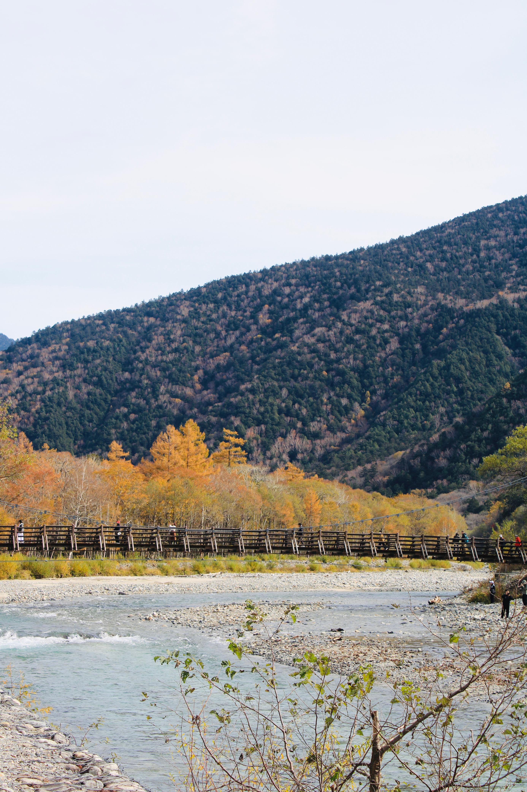
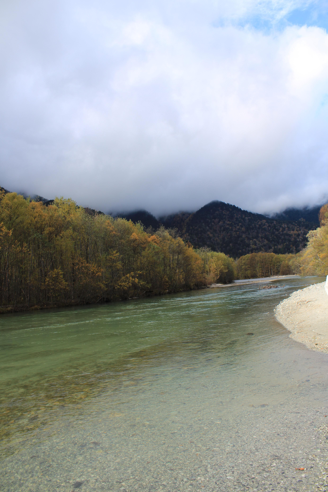
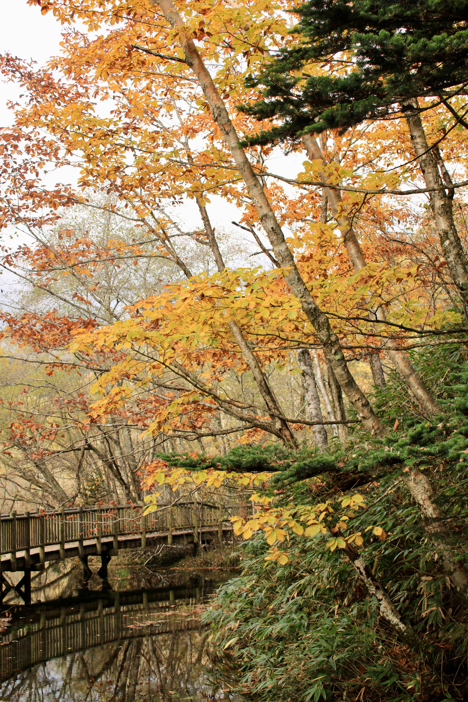
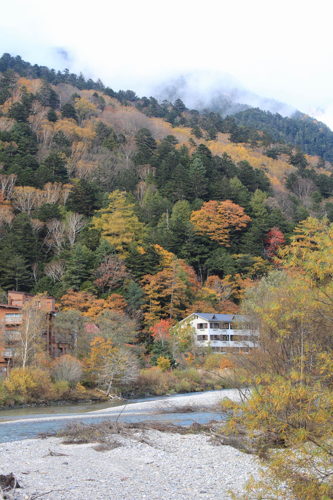
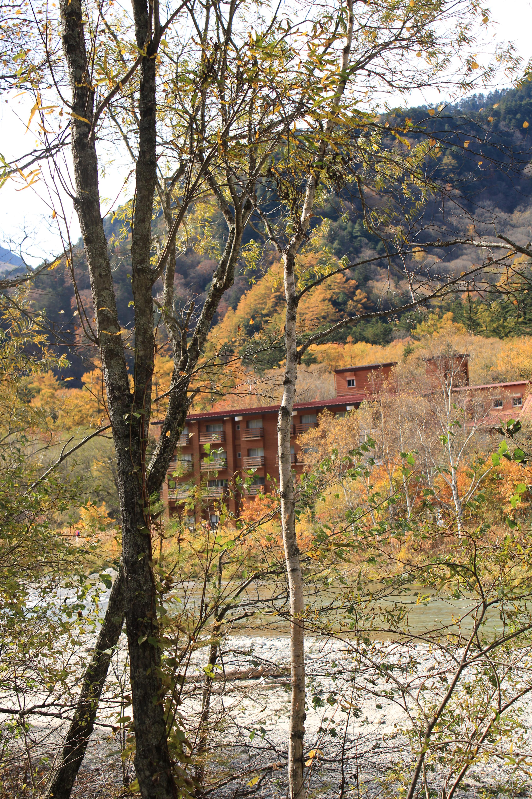
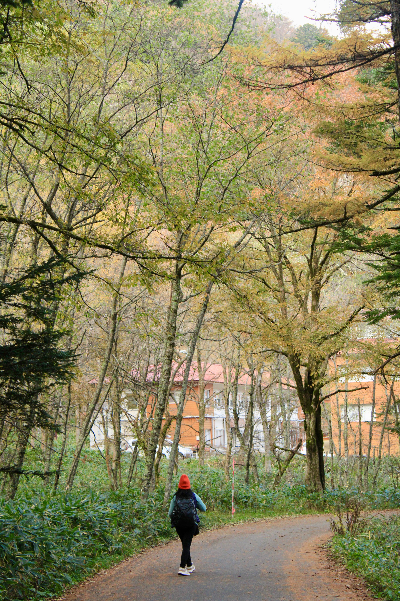
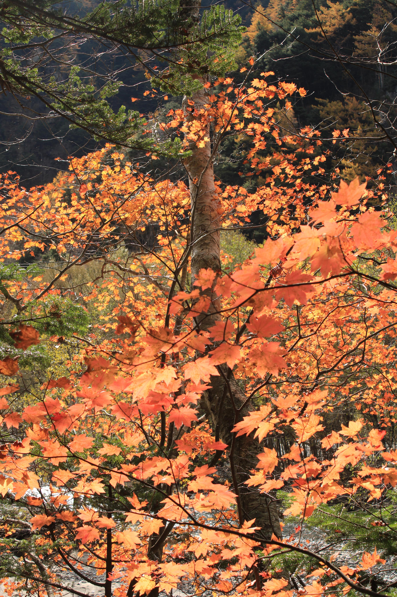
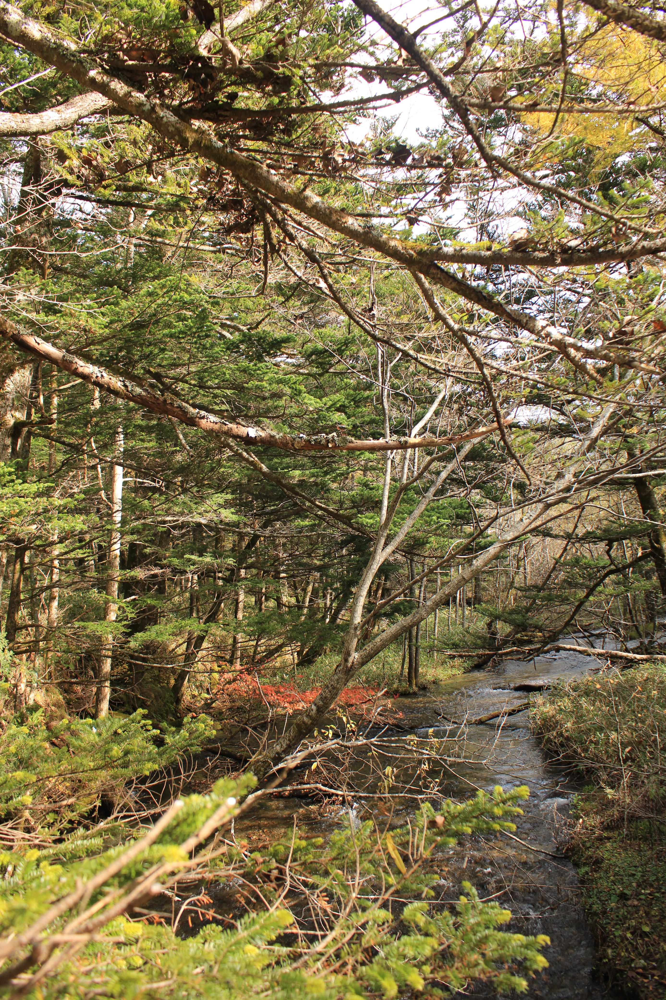

Kamikochi — 上高地 — translates loosely as "the highlands where gods descend." After one night in this glacially carved valley, entirely surrounded by peaks above 3,000 metres and no road in except by bus, the name stops feeling like mythology and starts feeling like the most accurate description of a place you've ever encountered.

Private cars are banned from Kamikochi entirely — not merely discouraged, but legally prohibited. This single decision, which has held for decades, is responsible for the valley's preservation. You arrive the only way permitted: by bus from Shin-Shimashima Station, itself reached by the Matsumoto Electric Railway from Matsumoto. From the moment you step off at the Kamikochi Bus Terminal, 1,500 metres above sea level, you are somewhere that requires effort to reach — and the reward is proportional to that effort.
The approach matters. Book the overnight bus from Shinjuku if you want to maximise your valley time. It deposits you at the terminal around 6 AM, when the light is still low and gold, the first buses of day-trippers are hours away, and the valley belongs entirely to those who stayed the night or were early enough to want it this badly. The alternative from Matsumoto is perfectly fine, but the early morning window — before 9 AM — is when Kamikochi is most itself.
"The moment the bus pulls free of the tunnel and the Hotaka Range appears above the treeline — all 3,190 metres of Oku-Hotakadake filling the windscreen — you understand immediately why this valley has been a place of pilgrimage since the Edo period."
Kamikochi stretches for roughly six accessible kilometres from Taisho Pond in the south to the lodges at Tokusawa and beyond. The Azusa River — impossibly turquoise, fed by snowmelt from peaks that stay white well into June — runs the length of the valley floor. The trails beside it are almost entirely flat, a rarity at this altitude, which means anyone can walk them.
Taisho Pond is the first encounter and it is extraordinary: formed in 1915 when the volcano Yakedake erupted and dammed the Azusa River, it holds the standing skeletons of larch trees, perfectly preserved, rising from still water that mirrors the Hotaka peaks on a calm morning. At this hour, with mist threading between the standing dead, it feels less like a lake and more like a Japanese ink painting made three-dimensional.


From Taisho Pond, the walk north along the Azusa River to Kappa Bridge — the valley's famous wooden suspension span, 36 metres across, with the Hotaka peaks framing the view on both sides — takes under an hour at a leisurely pace. The name comes from a mythical water creature said to inhabit the river below. What you're more likely to encounter: Japanese macaques, entirely unconcerned by your presence, crossing the footpath; grey wagtails darting between river stones; and, if you're here in October, the white birch trees burning yellow against the dark spires of the peaks.
The entire point of staying in the valley overnight — and it is worth the premium — is access to two windows that day-trippers never see. The first is the hour before 8 AM: the last bus from Matsumoto doesn't arrive until mid-morning, so the valley is empty of crowds, the light is raking and golden, and the reflection in the Azusa River is undisturbed. The second is the night itself, when the last day-tripper departs around 5 PM and the valley goes entirely still.
Book your lodge accommodation at least three months in advance for autumn, particularly if you want the Kamikochi Imperial Hotel or the Nishi-Itoya Mountain Lodge — both fill completely for the October leaf-peeping season. There are about half a dozen hotels within the protected valley, plus several mountain huts (sanso) for those continuing toward the peaks. Day-trippers can use many hotel facilities — hot spring baths, restaurants — without an overnight stay.

The valley's main route — Taisho Pond → Kappa Bridge → Myojin Pond — takes three to four hours at a relaxed pace, each direction. From Kappa Bridge, heading north to Myojin Pond (about an hour's easy walk), you enter quieter forest. Myojin Pond itself is enclosed, dark-green, and still, with a small Shinto shrine at its edge — one of those places that feels genuinely sacred rather than performatively so. A small wooden dock extends over the water; stand at the end of it and you'll understand why this valley has drawn pilgrims and mountaineers for two centuries.
Beyond Myojin lies Tokusawa, another hour further, where you enter the true realm of mountain huts and alpinists. The trail stays flat and through deep larch forest. You can stay the night here and push toward Karasawa Cirque the following morning — the glacial headwall of the valley, reached after a substantial climb, and one of Japan's most iconic high-mountain settings. For most visitors, though, Myojin Pond and back is the ideal scope for a single overnight stay.
"After the last day-tripper bus departs at 5 PM, the valley belongs only to those who stay. The silence that descends is not the silence of emptiness — it is the silence of something held carefully for a long time."


Autumn is the most spectacular season in Kamikochi, and also the most crowded. The white birch trees — shirakaba — turn a vivid chrome yellow through October; the larches follow in gold; the peaks often carry first snow by late October. Peak colour is weather-dependent and shifts year to year, but mid-October is the usual window. Weekday visits in autumn are dramatically quieter than weekends. Avoid the Japanese holidays (Obon and Golden Week) unless you want to queue for buses and trail space.
The valley is open from mid-April (when the snow recedes enough for the road to be cleared) through 15 November, after which it closes completely for winter. The season's opening brings a different magic: snowfields still blanketing the upper slopes, new green unfurling on the valley floor, and a sense of emergence. Summer is popular with hikers targeting the high peaks. Each season offers something genuine — autumn's colour is just the most photogenic.

